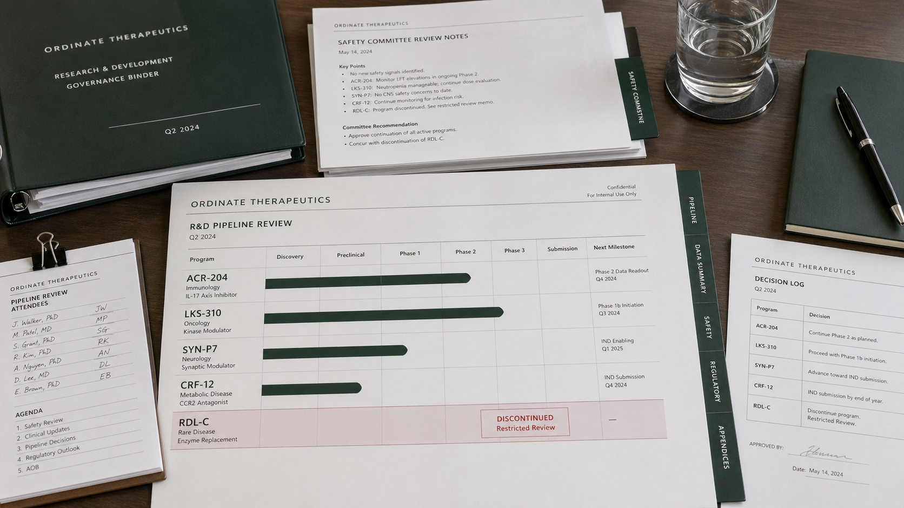

Research & pipeline

Ordinate's active development programs span discovery, preclinical and Phase I–III studies across neurology, acute care, pigment stability, coordinate modulation, suppression, recovery and diagnostics. Pipeline status is updated quarterly. Restricted programs are listed only to the extent permitted by company policy and applicable regulation.
Phase
Therapeutic area
Access
Last updated 2026-04-01 · next quarterly update 2026-07-01
Why we publish what we have stopped.
Ordinate publishes the status of discontinued programs as part of our research integrity policy. Discontinuation typically reflects safety, ethical or commercial considerations. CRF-12, our halted Chromafinil civilian derivative, was discontinued by the Ordinate Safety Committee on the grounds of unacceptable misuse potential.
Trial registries and posted results.
All Ordinate-sponsored interventional trials are registered with the appropriate national registry and results are posted within twelve months of database lock, in line with applicable transparency policies.
Transparency report →